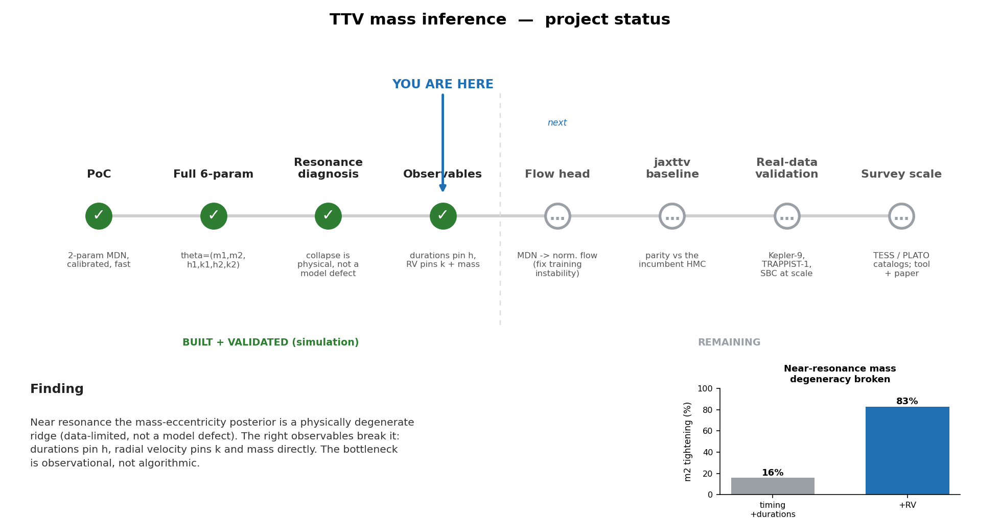
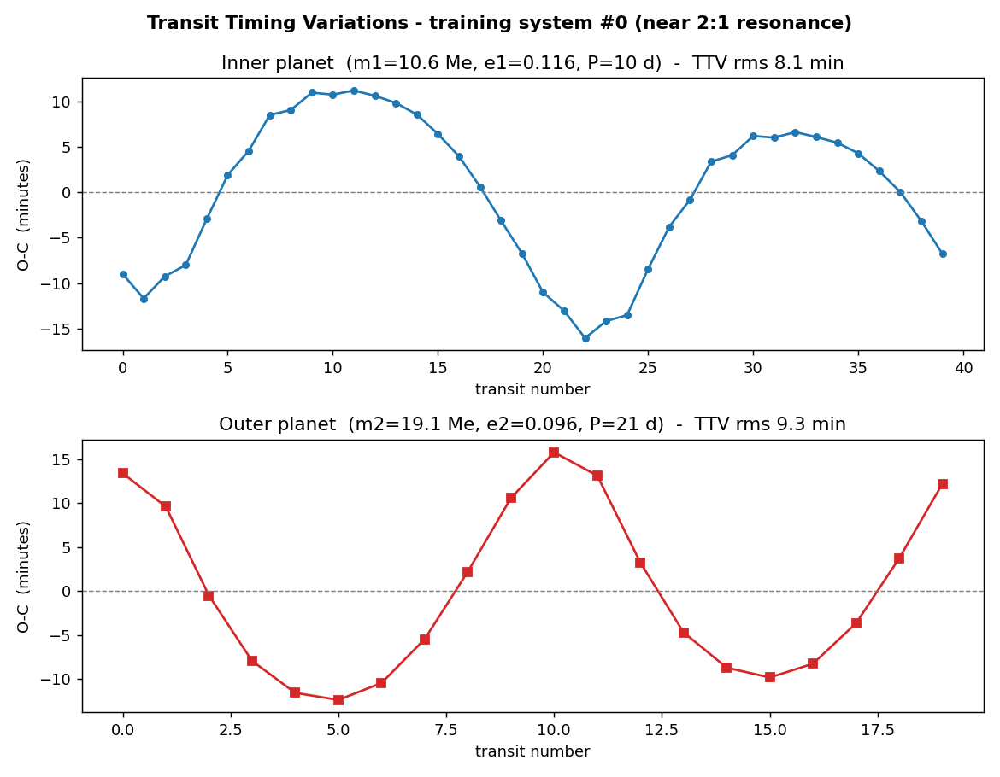
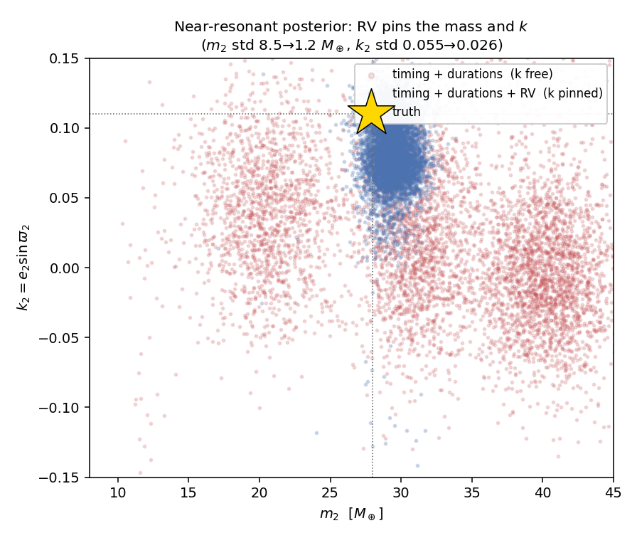
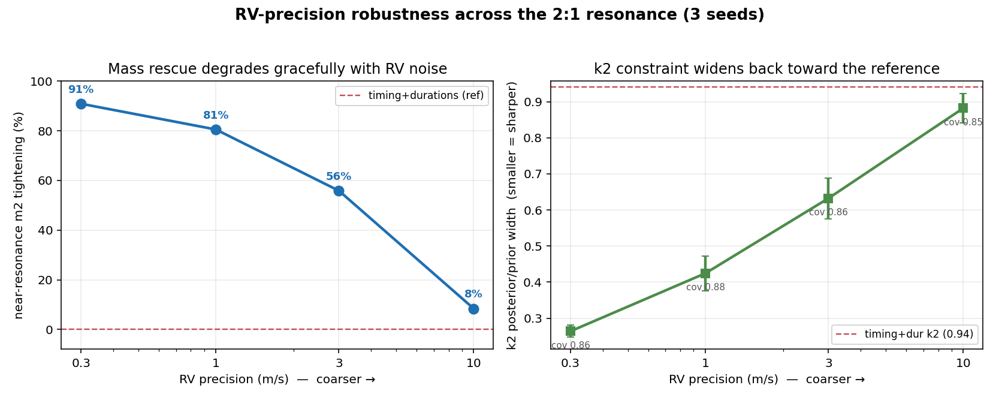
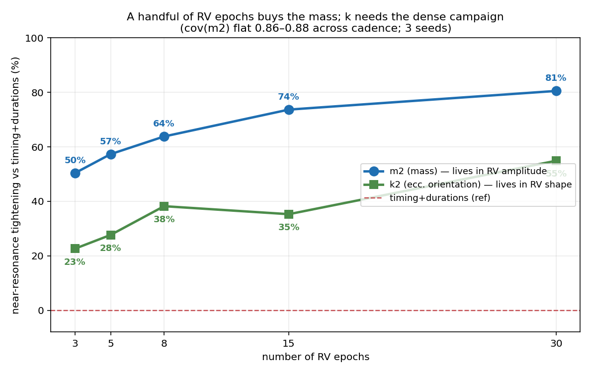
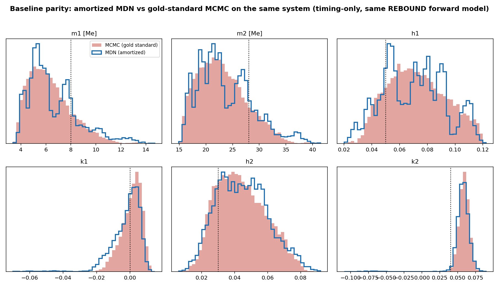
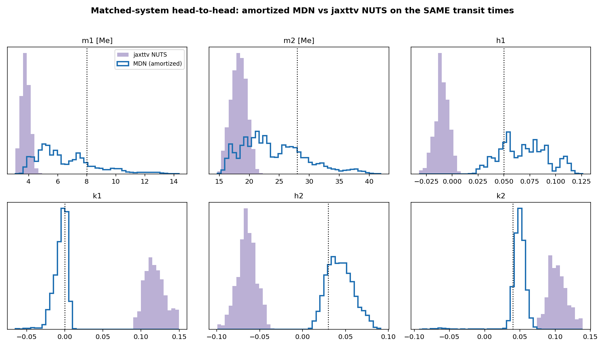
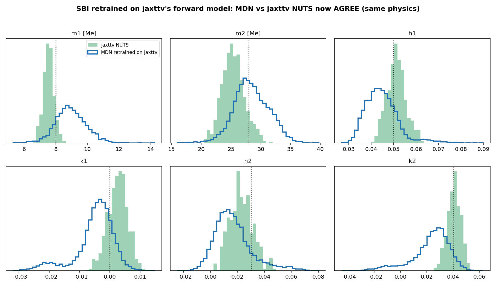
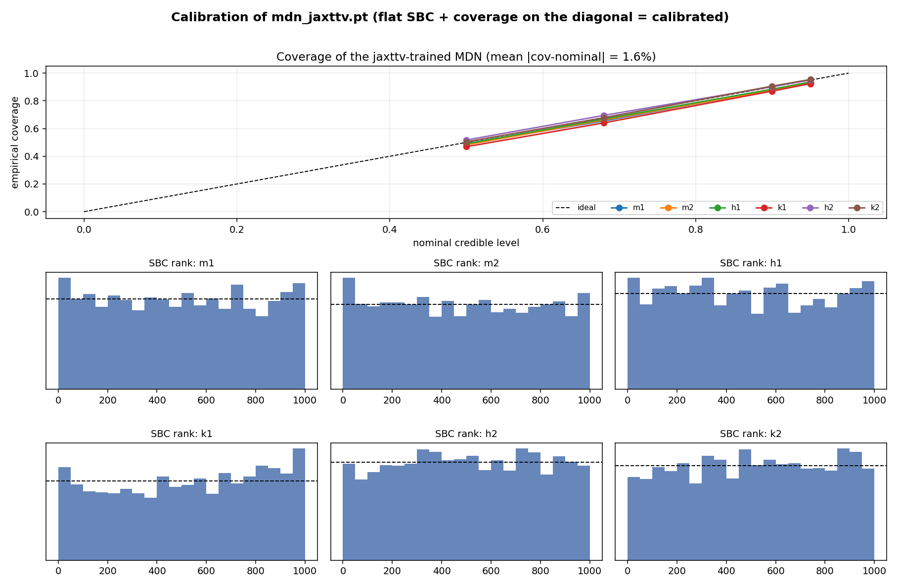

Learning fast, calibrated exoplanet masses from transit-timing variations
Can a neural network instantly return a trustworthy posterior over the masses and orbits of interacting planets, from the tiny wobbles in when they transit, and survive the near-resonant regime where standard fast methods give up? This page walks through what we built, how we tested it, and what we found.
Where we stand
Built and validated in simulation through the observables program (phases 0–3). The flow head,
baseline parity against jaxttv, and real-data validation remain.

status_figure.py.- Green circles with a check = phases built and validated in simulation.
- Grey hollow circles = phases still to do; the dashed line separates the two halves.
- The blue “YOU ARE HERE” arrow marks the current frontier (the observables program).
- The small bar chart is the one number to remember: near-resonance mass uncertainty shrinks 16% → 83% once radial velocity is added.
The problem, and the degeneracy at its heart
When two planets orbit one star they gravitationally tug on each other, so each transits slightly early or late on a repeating cycle. These transit-timing variations (TTVs) encode the planets' masses and orbits. The standard extraction is a per-system MCMC over an N-body simulator: hours to days per system, and usually restricted to non-resonant systems. We replace that with amortized inference: train one network once, then infer any new system in milliseconds.
The hard part is a degeneracy. The dominant TTV signal has an amplitude set by a combination of the perturbing planet's mass and its eccentricity, so a heavier planet on a rounder orbit and a lighter planet on a more eccentric orbit produce almost the same wobble. The set of equally-good answers traces a ridge in mass–eccentricity space. Near the 2:1 mean-motion resonance the signal collapses onto essentially one informative combination, so the ridge gets longer and flatter, and mass and eccentricity become nearly impossible to separate from timing alone.
We parametrize each planet's eccentricity as a smooth 2-vector
h = e·cos&varpi, k = e·sin&varpi (no singularity at
e=0, no angle wraparound). The full inference target is
θ = (m₁, m₂, h₁, k₁, h₂, k₂). This coordinate choice
turns out to be exactly the one in which the physics separates: durations constrain h, radial velocity
constrains k.
Method: amortized Neural Posterior Estimation (NPE)
We train a conditional density estimator q(θ | x) on pairs of
(true parameters, simulated data). The estimator is a Mixture Density Network (MDN): a neural
network whose output is not a single point but the parameters of a 24-component Gaussian mixture over the
6-D parameter space. Training maximizes the probability the mixture assigns to the true parameters; because
many degenerate systems share nearly identical data, the network is forced to widen its blob to cover all
consistent answers, and that width is the posterior.
The MDN architecture in detail
A shared MLP trunk (model.py) feeds three output heads that together parametrize the mixture.
The example uses the full timing+durations+RV input (in_dim = 151); in_dim is 61
(timing-only), 121 (+durations), or 151 (+durations+RV), always with the period ratio appended.
60 timing (O-C, min) | 60 durations (TDV, min) | 30 RV (m/s) | 1 period ratio
in_dim = 61 timing-only / 121 +durations / 151 +durations+RV"] subgraph BODY["BODY — MLP shared trunk"] L1["Linear(151 to 256)"] --> R1["ReLU"] R1 --> L2["Linear(256 to 256)"] --> R2["ReLU"] R2 --> L3["Linear(256 to 256)"] --> R3["ReLU"] R3 --> L4["Linear(256 to 256)"] --> R4["ReLU"] end X --> L1 R4 --> H["h (B, 256)
shared representation"] H --> W["HEAD 1: logits
Linear(256 to 24)
log_softmax → log_w (B, 24)
24 mixture weights, sum = 1"] H --> M["HEAD 2: means
Linear(256 to 144)
reshape → mu (B, 24, 6)
blob centers, raw (any value)"] H --> S["HEAD 3: logstd
Linear(256 to 144)
reshape, clamp(-7, 3), exp → sigma (B, 24, 6)
blob widths, positive"] W --> MIX["OUTPUT: 24-component Gaussian mixture over theta in R^6
p(theta | X) = sum_k w_k · N(theta; mu_k, diag(sigma_k^2))
theta = (m1, m2, h1, k1, h2, k2)"] M --> MIX S --> MIX MIX --> TRAIN["TRAINING: loss (nll)
label = theta_true (B, 6), one point
logsumexp(log_w + log N(theta; mu_k, sigma_k))
LOSS = − mean log p(theta | X)"] MIX --> SAMPLE["SAMPLING: inference
pick blob k ~ Categorical(w)
theta = mu_k + sigma_k · epsilon, epsilon ~ N(0, I)
→ posterior samples (B, n, 6)"]
Text (ASCII) version of the same diagram
INPUT X the observed data vector, one per system
+------------------------------------------------------------------+
| 60 timing (O-C, min) | 60 durations (TDV, min) | 30 RV (m/s) | 1 | shape (B, 151)
+------------------------------------------------------------------+
the trailing "1" is the appended period ratio (conditioning input)
|
v
+----------------------- BODY (MLP, shared trunk) -----------------------+
| Linear(151 -> 256) --> ReLU (B, 256) |
| Linear(256 -> 256) --> ReLU (B, 256) |
| Linear(256 -> 256) --> ReLU (B, 256) |
| Linear(256 -> 256) --> ReLU (B, 256) |
+------------------------------------------------------------------------+
h (B, 256) shared representation
+-------------------+-------------------+
v v v
HEAD 1: logits HEAD 2: means HEAD 3: logstd
Linear(256->24) Linear(256->144) Linear(256->144)
log_softmax reshape ->(B,24,6) reshape, clamp(-7,3)
-> log_w (B,24) -> mu (B,24,6) -> sigma=exp(.) (B,24,6)
(weights, sum=1) (centers, raw) (widths, positive)
\ | /
+------------------+------------------+
v
OUTPUT: 24-component Gaussian mixture over theta in R^6
p(theta|X) = sum_k w_k * N(theta; mu_k, diag(sigma_k^2))
theta = (m1, m2, h1, k1, h2, k2)
|
+---------------------+---------------------+
v v
TRAINING (nll) SAMPLING (inference)
label = theta_true (B,6), one point pick blob k ~ Categorical(w)
LOSS = - mean log p(theta|X) theta = mu_k + sigma_k * epsThree heads, three jobs. Weights use softmax (must sum to 1); means are raw (a center
can be anywhere); widths use exp of a clamped log (must be positive). ReLU is the
body nonlinearity. The proposed next step (roadmap) swaps this MDN head for a
normalizing flow to fix training instability, not to sharpen marginals.
Data, and the train / holdout sets
All data is simulated with a REBOUND (WHFast) N-body forward model (simulator.py),
so ground-truth parameters are known exactly. Each system: a star plus two transiting planets, integrated
over a ~500-day baseline. Geometry is idealized as edge-on and coplanar (see caveats).
Priors (what each parameter is drawn from)
| Parameter | Prior | Meaning |
|---|---|---|
m₁ | Uniform [3, 15] M⊕ | inner planet mass |
m₂ | Uniform [8, 45] M⊕ | outer planet mass |
(h₁,k₁), (h₂,k₂) | uniform-in-disk, e≤0.12 (baseline) / 0.15 (near-resonance) | eccentricity vectors |
| period ratio | fixed 2:1, or Uniform [1.90, 2.20] (cross-resonance) | outer/inner period; fed as a conditioning input |
Observables (the input vector, stackable)
| Layer | Dim | What it is | Constrains |
|---|---|---|---|
| Transit timing (O-C) | 60 | 40 inner + 20 outer transit-time residuals (minutes) | the degenerate mass–ecc ridge |
| + Transit durations (TDV) | +60 | one duration residual per transit | h (e·cos&varpi) |
| + Radial velocity | +30 | star's reflex velocity, 30 epochs, m/s | k (e·sin&varpi) & mass |
Train / holdout per experiment
Every experiment trains on simulated pairs and evaluates on a disjoint held-out set generated with a different random seed (no system appears in both). Calibration is measured on the holdout; near-resonance results are reported at the separatrix (period ratio within 0.025 of 2.0).
| Experiment | Train | Val | Holdout test | Regime / noise | Seeds |
|---|---|---|---|---|---|
PoC / 6-param (train.py) | 16000 | 1500 | 800 (SBC, evaluate.py) | fixed 2:1, timing 0.5 min | 1 |
Cross-resonance (cross_resonance.py) | 16000 | 1500 | 3000 | ratio 1.9–2.2, e≤0.15 | 1 |
Disambiguation (disambiguation.py) | 12000 | 1200 | ABC pool 25000/ratio, 150 accepted | fixed ratio | 1 |
Durations A/B (observables_experiment.py) | 9000 | 1500 | 600 | fixed 2:1, e≤0.12, 0.5 min | 1 |
3-arm +RV (observables_rv.py) | 13000 | 1500 | 3000 | ratio 1.9–2.2, e≤0.15, RV 1 m/s | 3 |
RV robustness (robustness_rv.py) | 9000 | 1200 | 2000 | RV noise 0.3–10 m/s | 3 |
RV cadence (cadence_rv.py) | 9000 | 1200 | 2000 | RV epochs 3–30 | 3 |

- x-axis = transit number (1st transit, 2nd, 3rd…), i.e. time marching forward.
- y-axis = O-C in minutes (“observed minus calculated”): how many minutes early (below 0) or late (above 0) each transit is, compared to a perfectly clockwork constant-period prediction. The dashed line at 0 is that clockwork baseline.
- The wavy pattern is the TTV: the planets tug each other, so transits drift early then late on a slow cycle. The height of the wave (its amplitude, here ~10–16 min) and its period encode the masses and eccentricities, that is the information the network decodes into a posterior.
- A flat line at 0 would mean no interaction (no information). Bigger, clearer waves = more constraining data.
Validation toolkit
Different phases used different tools, matched to the claim being made.
| Tool | What it measures | Pass criterion |
|---|---|---|
| Coverage / SBC | calibration: does the X% credible interval contain truth X% of the time, per parameter | coverage ≈ nominal; flat SBC rank histogram |
Recovery / |z| | accuracy: posterior-sigmas between truth and posterior mean | |z| ≲ 2 |
| Posterior-predictive | do re-simulated posterior samples bracket the observed data | observed transits inside the sample envelope |
| Validation NLL | informativeness / sharpness of the posterior | more negative = sharper |
| Width tightening | % shrinkage of a parameter's posterior width when adding an observable | higher = more informative observable |
| ABC reference | independent likelihood-based posterior width, to test physical vs model limit | MDN width ≤ ABC width → faithful |
| Linear probe R² | is a parameter even present in an observable | higher = information is there |
Phase 0 — Proof of concept done
What we did
The smallest end-to-end version: two planets, infer just 2 parameters (m₂, e₂) with
an MDN, on real REBOUND N-body data. Chosen because the 2-D posterior can be plotted and eyeballed, and because
(m₂, e₂) is the textbook degeneracy.
Results
- Calibrated posterior that reproduces the curved mass–eccentricity valley.
- ~10⁴× faster than a brute-force grid.
- REBOUND match: real N-body agreed with the toy integrator on TTV super-period, amplitude, and mass-scaling.
Phase 1 — Full 6-parameter element vector done
What we did
Scaled to the full θ = (m₁, m₂, h₁, k₁, h₂, k₂), both
planets transiting, and verified calibration across all six. Trained on 16000 systems, held out 800 for SBC.
Results
- Coverage near nominal at 50/68/90/95% for every parameter; flat SBC rank histograms.
|z|recovery near or under 2; posterior-predictive envelope brackets the data.
Phase 2 — Resonance diagnosis done
This is where the project's thinking changed. The original fear was that calibration would break at the resonance separatrix. We stress-tested in stages.
2a · Resonance sweeps (fixed ratio)
Drove systems toward 2:1 at e≤0.12 then e≤0.30. Found: no calibration break; posteriors widen honestly; instability stayed ~0% and was lower near resonance. The 2:1 resonance is dynamically protective. The "calibration breaks at the separatrix" hypothesis was falsified.
2b · Cross-resonance (one model spanning 1.9–2.2)
Harder: a single model handling the whole ratio range, ratio fed as input. Found two failures, but not overconfidence: unstable training (validation NLL diverges; only early-stopping saves it) and informativeness collapse (best val NLL −5.9 → +3.0 → +5.7 from fixed-ratio to spanning-resonance to giant-eccentric). Calibration drift stayed modest (~6%).
2c · Disambiguation (the pivot)
Is the widening the model's fault or the data's? We built an independent ABC (likelihood-based) reference and compared widths. Found: the MDN's widths track the ABC reference and are never wider. Since a weak model would be wider than the true limit, the width is the real information limit: the collapse is physical (data-limited). (Caveat: ABC was sparsity-limited, so this leans partly on the calibration evidence.)
2d · Sim-to-real pretraining
Masked pretraining on a controlled clean-vs-messy-noise gap. Found: calibration error improved 5.4% → 2.4% (frozen encoder) but point accuracy (RMSE) got slightly worse. So pretraining buys robustness, not information. Single seed, suggestive.
Phase 3 — Observables program done
Acting on the diagnosis: add observables that carry the missing information. The strategy is to add observables that constrain different combinations, so their constraints intersect instead of overlapping.
3a · Transit durations (pin h)
Duration ≈ 2R★/|v_y| at mid-transit depends on h nearly independently of mass
(corr(h, duration) ≈ −1). A/B test: timing vs timing+durations, same systems and noise.
Fixed ratio (e≤0.12)
mass tightening 76–81%h-components 94–95%
val NLL −4.3 → −10.2
coverage ~ nominal
Across resonance (e≤0.15)
val NLL +3.6 → −1.4h pinned 93–96%
mass only ~22% (weakest at separatrix)
durations pin h, not k
Robustness (0.5–10 min duration noise, 3 seeds): survives; at 10-min precision mass width is still about half timing-only (the signal is in the mean, averages down over transits).
3b · Radial velocity (pin k and mass) — the headline
The star's Doppler wobble: its amplitude ∝ mass (a near-direct mass measurement independent of the
TTV degeneracy), and its eccentric harmonic shape encodes the full e-vector including k.
Linear probe confirms: k₂ predictability 0.16 (durations) → 0.63 (RV); m₂ from RV alone
R² = 0.99. 3-arm A/B/C across the resonance, 3 seeds.
| Metric (near resonance) | A: timing | B: +durations | C: +durations+RV |
|---|---|---|---|
| best validation NLL | +3.6 | −1.4 | −5.8 |
| m₂ mass tightening | — | 16% | 83% |
| k₁ / k₂ tightening | — | +5% / −16% | 57% / 51% |
| h-components | — | pinned | 96–97% |
| 90% coverage | 0.88 | — | 0.83 |

k₂. Red (timing+durations, k free) is a wide ridge; blue (+RV, k pinned)
collapses to a tight blob on the truth (gold star). m₂ std 8.5→1.2 M⊕, k₂ std
0.055→0.026. Generated by posterior_overlay_rv.py.- x-axis = m₂ (the outer planet's mass); y-axis = k₂ (part of its eccentricity vector).
- The gold star is the true answer we are trying to recover.
- Red cloud = timing + durations. A long, smeared ridge: many different mass/k combinations fit the data equally well, so the answer is undetermined. This smear is the near-resonance degeneracy.
- Blue cloud = timing + durations + RV. A tight blob sitting right on the star: adding radial velocity collapses the ridge to a single confident answer.
- The story is the red→blue collapse: same system, same network, just more of the right data.
3c · RV robustness (how precise must the spectrograph be?)
Swept RV noise 0.3–10 m/s (3 seeds), against the timing+durations reference.

robustness_rv.py.- Left panel (blue) = the good news. y-axis is how much the mass uncertainty shrinks near resonance (higher = better). The red dashed line at 0% is the timing+durations baseline (no RV). The curve stays high at good precision (91% at 0.3 m/s, 81% at 1 m/s) and only falls off toward the right, so the result degrades gracefully and still works at real instrument precision (~1–3 m/s).
- Right panel (green) = the k constraint. y-axis is the k₂ width ratio, and here smaller is sharper (opposite sense to the left). The red dashed line is the timing+durations reference (k₂ almost uninformative, ~0.94). As RV gets noisier the green points climb back toward that line, meaning RV loses its unique grip on k. The tiny “cov” labels show calibration staying flat (~0.85–0.88) the whole way, no overconfidence as noise grows.
3d · RV cadence (how many visits?)
Subsampled the RV curve to 3–30 epochs (3 seeds). A clean mass-vs-k split.

cadence_rv.py.- Blue = mass (m₂). Starts high even at 3 epochs (~50%) and rises slowly. Mass lives in the RV curve’s amplitude, which a few points already pin, so mass is cheap.
- Green = eccentricity orientation (k₂). Stays low and climbs slowly (23% → 55%). k lives in the eccentric harmonic shape of the curve, which needs many epochs to resolve, so k is expensive.
- The gap between blue and green is the whole message: a handful of visits buys the mass; fully pinning the orbit’s orientation is what costs telescope time. Calibration (noted in the title) stays flat across cadence.
Validation against the incumbent (MCMC / jaxttv)
The established way to get TTV masses is likelihood-based: run a sampler (MCMC/HMC) over a
forward model, one expensive fit per system. Eric Agol's jnkepler.jaxttv (differentiable
JAX N-body + NumPyro HMC) is the state-of-the-art version, exact per system. Our method is a different
strategy: amortized, train once on simulated pairs, then infer any system in a single forward
pass. Two checks tie the two together.
Check 1 · Does our fast posterior match an exact one? (same physics)
The honest apples-to-apples test: run a gold-standard MCMC (emcee) over our own
REBOUND likelihood on one system, and compare it to the amortized MDN on the same data. Same forward
model, so any difference is the inference method, not the physics engine.

baseline_parity.py.- The two overlap in location, width, and shape in every panel, the network reproduced the exact Bayesian answer.
- Mean posterior-width ratio MDN/MCMC = 1.32: the MDN is slightly wider (conservative), never dangerously narrow, the safe direction to err.
- Both are offset from truth in the same direction (this is one noisy data realization) and agree with each other, which is exactly the validation.
Check 2 · The actual incumbent, running (jaxttv)
We also ran the real tool: jnkepler.jaxttv's differentiable N-body sampled with NumPyro
NUTS, on a near-2:1 two-planet system (73 transit times, 1-min precision), inferring the same six
quantities (masses + eccentricity vectors, ecosw = h, esinw = k). It recovers them with tight, exact
posteriors (m₂ = 24.8 ± 1.7 M⊕) in 310 s of HMC.
baseline_jaxttv.py.)Check 3 · Matched-system head-to-head (same data to both) — and a real lesson
The strongest test: feed the identical noisy transit times (one system, 40+20 transits) to both our MDN and jaxttv NUTS, and overlay the posteriors.

headtohead_ours.py +
headtohead_jaxttv.py + headtohead_plot.py.- The MDN brackets the truth in every panel; jaxttv is tight but biased (m₂ 18 vs 28; the eccentricity components k₁, h₂, k₂ land far from truth).
- Why (decisive, not a bug): at the true parameters, jaxttv's forward model mispredicts our REBOUND transit times by 7.4 min RMS (14× the 0.5-min noise), identical for its fast and newton solvers and for timesteps P1/20–P1/120. The two N-body codes genuinely disagree at ~7 min for this near-2.1 system, so jaxttv shifts mass/eccentricity to compensate.
- jaxttv is not wrong. On its own data it recovers truth (Check 2). The MDN looks better here only because of home-field advantage: it was trained on our REBOUND forward model.
Check 4 · The fix: retrain the SBI on jaxttv's own forward model
The clean resolution the mismatch pointed to: stop using our REBOUND simulator to make the training
data, and regenerate it with jaxttv itself. Because jaxttv's differentiable N-body vectorizes
(vmap, ~0.4 ms/system), 16000 training systems take ~10 s. We retrained the same MDN on them
(best val NLL −6.26, healthy) and re-ran the comparison, now both sides share jaxttv physics.

gen_jaxttv_data.py +
train_jaxttv_mdn.py + retrain_compare_*.py.- Blue (MDN) and green (jaxttv NUTS) now overlap in every panel and both center near the truth (dotted line), compare to Check 3, where the eccentricity vectors were on opposite sides.
- Agreement: mean posterior-mean offset ≈ 2.3 jaxttv-σ (down from grossly rotated), with the MDN ~2× wider, the normal amortized-vs-exact gap, in the safe (conservative) direction.
And it is not just one lucky system: on 3000 held-out jaxttv systems the retrained MDN is well-calibrated, empirical coverage sits on the diagonal (mean |coverage − nominal| = 1.6%) with broadly flat SBC rank histograms, so the amortized posterior is trustworthy across the population.

eval_jaxttv_mdn.py.- Top (coverage): for each nominal credible level (x), the fraction of systems whose truth falls in that interval (y). On the dashed diagonal = honest error bars. All six parameters track it.
- Bottom (SBC): the rank of the truth among posterior samples, per parameter. A flat histogram means calibrated; peaks at the edges would mean over/under-confidence. These are broadly flat.
Refined thesis
- Amortized SBI for TTV is calibration-robust out of the box, even at large TTVs, giant eccentric planets, and across the resonance. It does not fail by overconfidence.
- It fails by unstable training and informativeness collapse spanning the resonance, and that collapse is largely physical (data-limited), not a model defect.
- So the bottleneck for posterior sharpness is observational, not algorithmic. Demonstrated end to end: durations pin h, radial velocity pins k and mass, and near-resonance mass tightening snaps from 16% to 83%.
- The genuine ML contributions: amortization at survey scale; a flow for faithful multimodal posteriors and stable training (not for tighter marginals); ingesting more observables (the real information lever); and sim-to-real robustness via pretraining.
Roadmap and what remains
| Phase | Status |
|---|---|
| 0 · PoC (2-param MDN, calibrated, fast) | done |
| 1 · Full 6-param element vector | done |
| 2 · Resonance diagnosis (collapse is physical, not overconfidence) | done |
| 3 · Observables program (durations pin h, RV pins k + mass; 16%→83%) | done |
| 4 · Flow head (MDN → normalizing flow; fix training instability) | next |
5 · Baseline parity vs jaxttv HMC | pending |
| 6 · Encoder + real data (Kepler-9, TRAPPIST-1; match published MCMC; SBC at scale) | pending |
| 7 · Survey scale (TESS / PLATO; tool + paper) | pending |
A "stochastic-simulator" treatment of strong chaos was in the original plan but proved unnecessary: instability stayed ~0% and the 2:1 resonance was dynamically protective.
Honest caveats
- Incumbent. Differentiable N-body + HMC (
jaxttv) is mature and exact per-system; our edge must be amortization at scale + multimodal/calibrated posteriors, not raw per-system accuracy. Benchmark early. - Information limit. Sharpness is data-limited near resonance (strongly supported, not proven; ABC was sparsity-limited).
- Geometry idealization. The simulator fixes edge-on (i = 90°) and coplanar, so RV maps to the true mass not m·sin i, making the RV mass constraint modestly optimistic. Minor for transiting systems (sin i ≈ 1 by selection); the real simplification is coplanarity, which omits nodal precession and the out-of-plane duration/depth variations it drives. The relative thesis is unaffected.
- Reproducibility. Some results are single-seed (PoC, cross-resonance, disambiguation, pretraining); the RV program is 3-seed. Multi-seed everything before any formal write-up.
- Sim-to-real gap was small in our synthetic test; validate on real Kepler systematics before over-investing.
Reproduce it
pip install -r requirements.txt
# Phase 0/1: train the 6-param posterior, then validate (coverage, SBC, speed)
python train.py
python evaluate.py
# Phase 2: resonance diagnosis
python resonance_sweep.py
python cross_resonance.py
python disambiguation.py
python tf_pretrain.py
# Phase 3: observables program
python observables_experiment.py # durations A/B (fixed ratio)
python observables_rv.py # 3-arm timing / +durations / +durations+RV
python robustness_rv.py # -> robustness_rv.png
python cadence_rv.py # -> cadence_rv.png
python posterior_overlay_rv.py # -> posterior_overlay_rv.png
python status_figure.py # -> status_figure.pngFull narrative and the resume point live in HANDOFF.md; detailed results in
README.md.
Single-file walkthrough generated for the TTV-experiment repository. Figures are the committed PNGs alongside this file; the architecture diagram renders via Mermaid (CDN) with an ASCII fallback above.